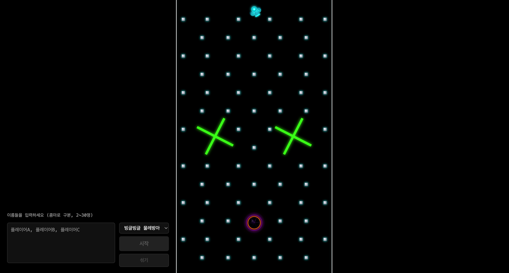
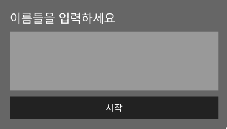

Pachinko Draw
핀볼 랜덤 뽑기 / 사다리 룰렛 대체 웹게임
Next.js 16
React 19
Matter.js
TypeScript
플레이어 이름을 입력하면 각자 색상의 핀볼이 발사되고,
핀과 물레방아를 거쳐 블랙홀에 가장 많이 들어간 사람이 승리합니다.
바이브코딩으로 만든 웹 서비스들
Pachinko Draw – 사용된 라이브러리
Runtime Dependencies
| matter-js | 2D 물리 엔진. 충돌, 중력, 강체 시뮬레이션 |
| next | 16.1.6 — App Router 기반 프레임워크 |
| react | 19.2.3 — UI 렌더링, 상태 관리 |
| react-dom | 19.2.3 — DOM 바인딩 |
Dev Dependencies
| typescript | 타입 안전성, 컴파일 타임 에러 검출 |
| tailwindcss | 유틸리티 CSS 프레임워크 (v4) |
| eslint | 코드 품질/스타일 린터 |
왜 이 조합인가?
- Matter.js — 가볍고 브라우저 네이티브, 별도 WASM 불필요
- Next.js 16 — dynamic import로 게임 컴포넌트 지연 로딩
- React 19 — useCallback/useRef로 게임 루프와 상태 분리
- Canvas 2D — WebGL 없이도 수백 개 공 60fps 렌더링
외부 의존성이 matter-js 단 1개인 초경량 구조.
나머지는 모두 Next.js/React 생태계 기본 도구.
나머지는 모두 Next.js/React 생태계 기본 도구.
Matter.js – 물리 엔진 원리
Matter.js는 브라우저에서 동작하는 2D 물리 엔진입니다.
"월드"에 물체를 배치하면, 매 프레임마다 중력·충돌·반발을 자동으로 계산해 줍니다.
월드 & 중력
Engine을 생성하면 월드가 만들어지고, 모든 물체에 중력이 적용됩니다.
매 프레임
Engine.update() 호출로 물리 시뮬레이션이 진행됩니다.
강체 (Bodies)
원(circle), 사각형(rectangle) 등 기본 도형으로 물체를 생성합니다.
isStatic: true로 고정 장애물(핀, 벽)을 만들 수 있습니다.
충돌 감지
물체 간 충돌을 자동으로 감지하고 반발/마찰을 계산합니다.
isSensor: true로 통과는 허용하면서 감지만 하는 것도 가능합니다.
속도 & 위치 제어
setVelocity()로 물체에 힘을 주고,
setPosition()/setAngle()로 위치/회전을 직접 제어합니다.
이 프로젝트에서의 활용
- 공 발사 —
setVelocity로 대포 각도에 따른 초기 속도 부여 - 물레방아 —
setAngle + setPosition으로 날개 회전 - 블랙홀 인력 — 거리 기반
setVelocity조향 - 슬로우모션 —
timeScale = 0.25로 피날레 연출
Pachinko Draw – 전체 프로세스 흐름
이름 입력
콤마 구분, 2~30명
→
셔플 & 배분
색상 배정, 공 수 계산
→
게임 시작
대포에서 공 연속 발사
→
핀볼 낙하
핀 충돌 + 물레방아
→
블랙홀 활성
인력 흡수, 점수 증가
Winner!
우승자 + Confetti
←
승자 판정
남은 공 계산, 조기/타임아웃
←
피날레 모드
슬로우모션 + 줌인
승리 조건
- 조기 판정 — 1위 점수 > 2위 + 남은 공 수
- 전체 소진 — 모든 공 소진 시 최고 점수자
- 타임아웃 — 피날레 15초 초과 시 강제 종료
주요 연출
- 블랙홀 — 반경 점진 성장, 인력 lerp 유도
- 피날레 — timeScale 0.25, 카메라 1.8x 줌
- 핀 소멸 — 블랙홀 주변 핀 순차 제거
- 우승 화면 — glow 텍스트 + 파티클 폭죽
Pachinko Draw – 스크린샷

게임 플레이 화면

초기 기획 스케치

플레이어 입력 UI
↗ 직접 플레이 : pachinko-draw.vercel.app
|
소스코드 : github.com/json91-dev/pachinko-draw